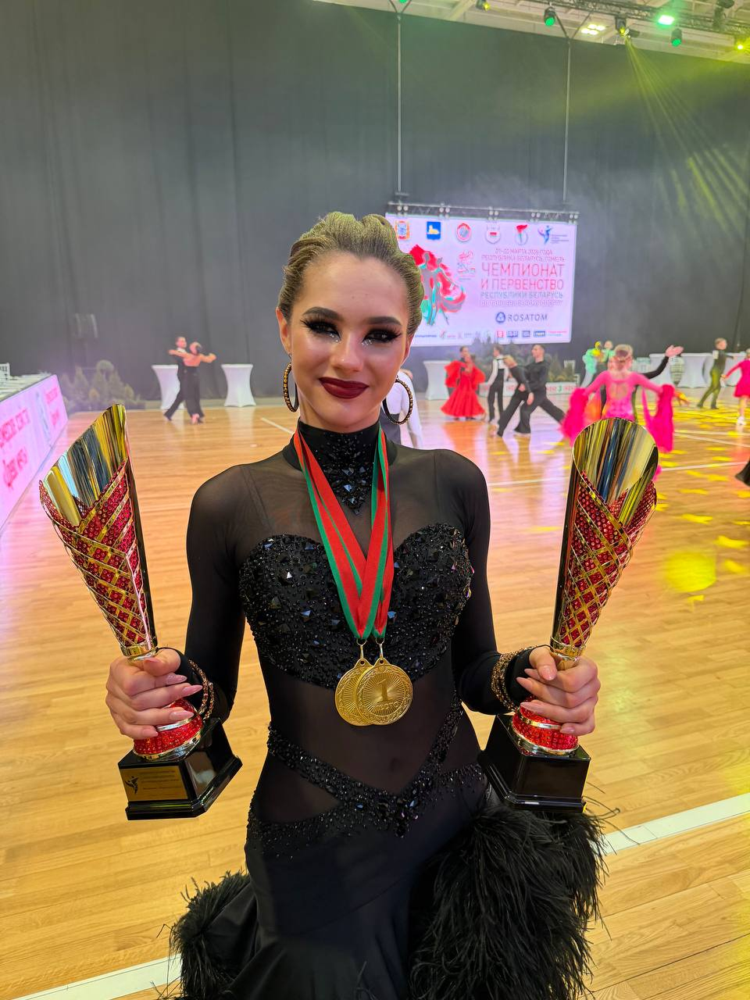

ТСК «Мáксима» / 2017—2026
СОБЫТИЯ
Календарь движения ТСК «Мáксима».
BDA OPEN
FESTIVAL
3–4 октября
АРХИВ
ПАРКЕТА
- Республиканские соревнования
- Международные соревнования
- Областные соревнования
- Первенства
- Фестивали
- Турниры
В движенииКАЖДОЕ СОБЫТИЕ —
КАЖДОЕ СОБЫТИЕ —
НОВАЯ ГЛАВА.
Соревнования, фестивали и турниры — моменты, в которых команда становится сильнее.